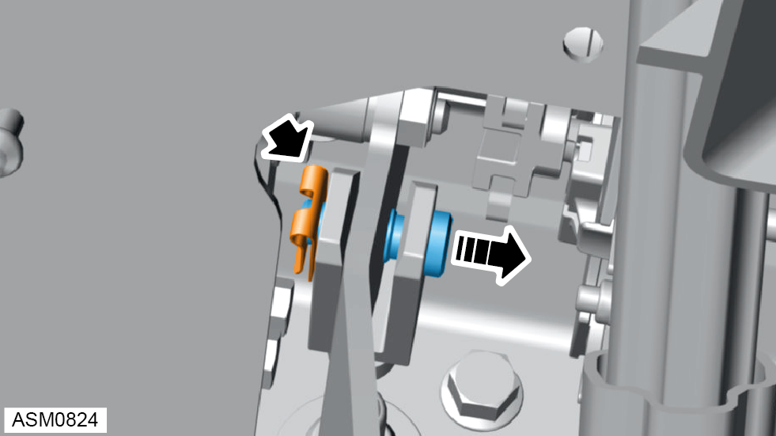
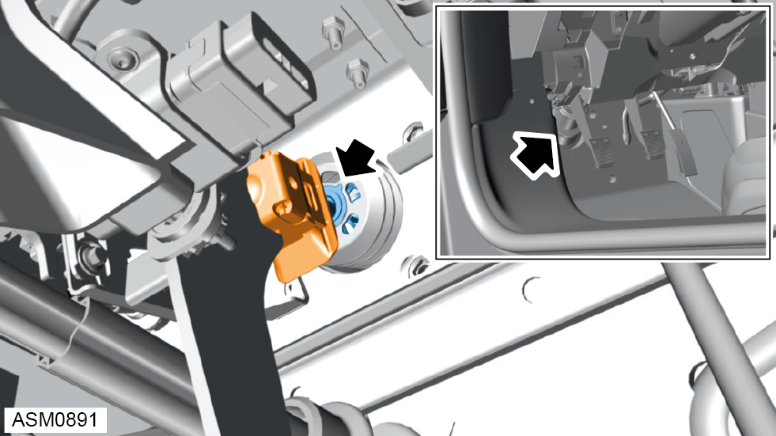
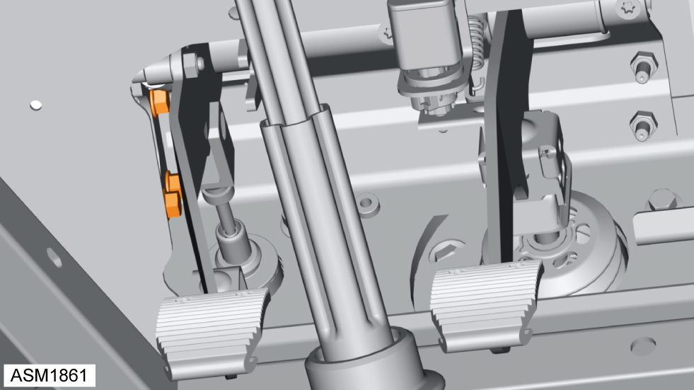
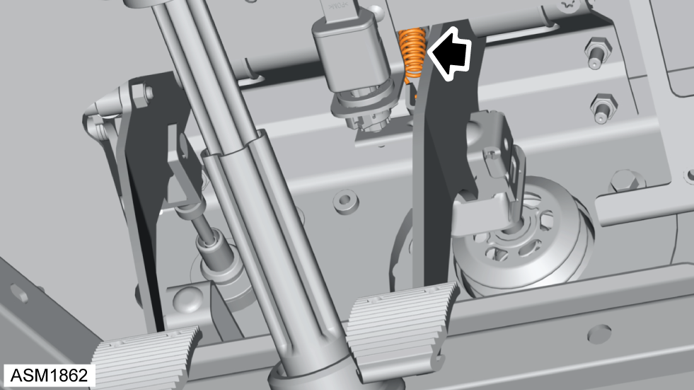
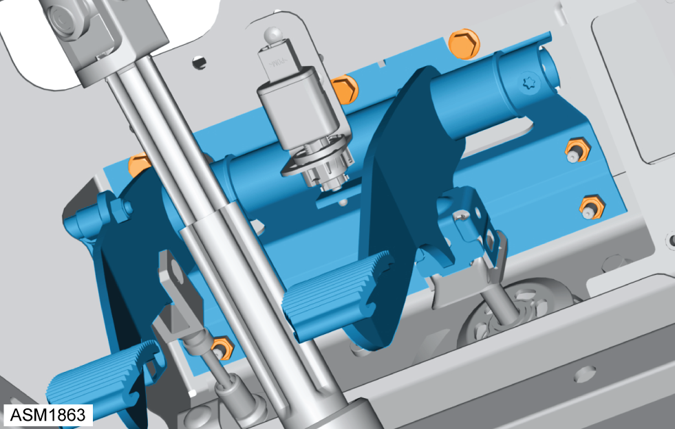
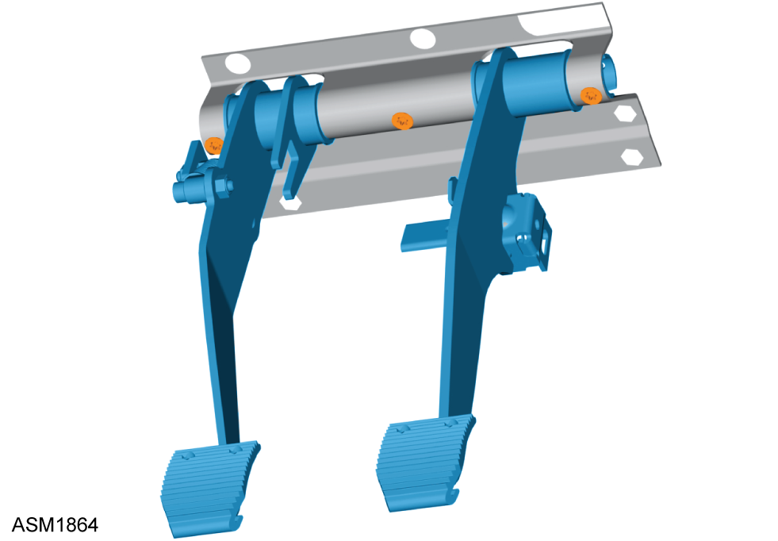
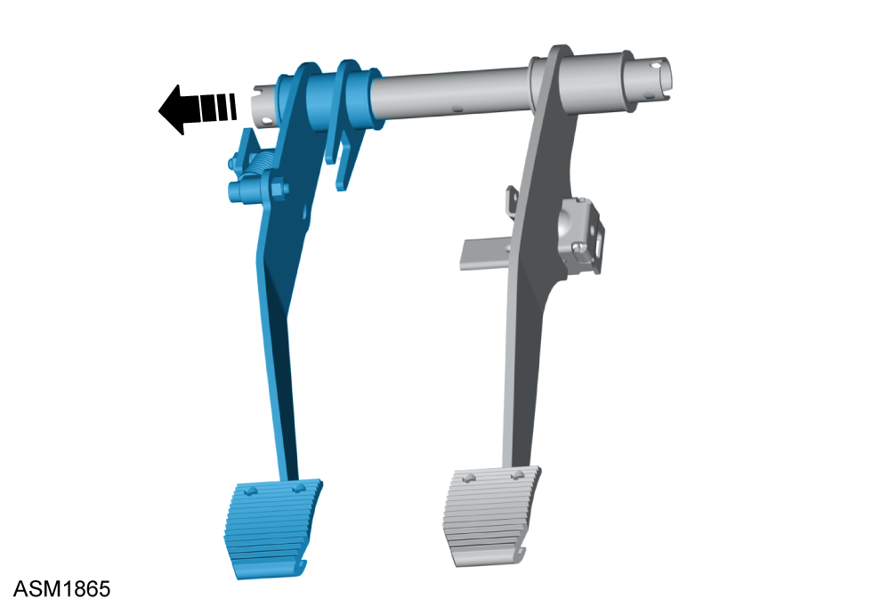

Clutch Pedal
Print
Operation Code: 14.01.05-02
Removal
- Remove throttle pedal assembly. Refer to procedure.
- Remove clutch potentiometer. Refer to procedure.

- Remove clip and pin securing clutch master cylinder to clutch pedal.

- Release brake servo pushrod from brake pedal.

- Remove bolts (x3) securing clutch pedal spring bracket to pedal box.

- Unhook brake pedal return spring.

- Remove M6 bolts (x3) and M6 nuts (x3) securing pedal assembly to pedal box. Torque 16 Nm.
- Remove pedal assembly.

- Remove Torx screws (x3) securing pedal shaft to pedal shaft bracket.

- Remove clutch pedal from pedal shaft.
Installation
- Installation is the reverse of removal procedure except for the following:
- Lubricate pivot bush of clutch pedal with Syntheso GLK1 or equivalent.